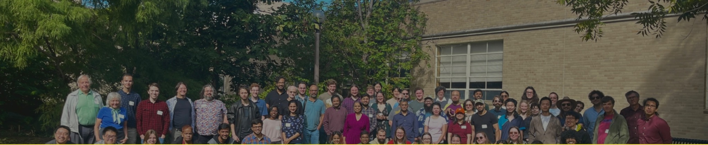

University of Kansas
KU Student Algebra Seminar
Speaker information and announcements for the Student Algebra Seminar at the University of Kansas.
Time:
Wednesdays, 3:00–4:00 PM
Location:
Snow Hall 564
Fall 2026
Speaker Schedule
Spring 2026